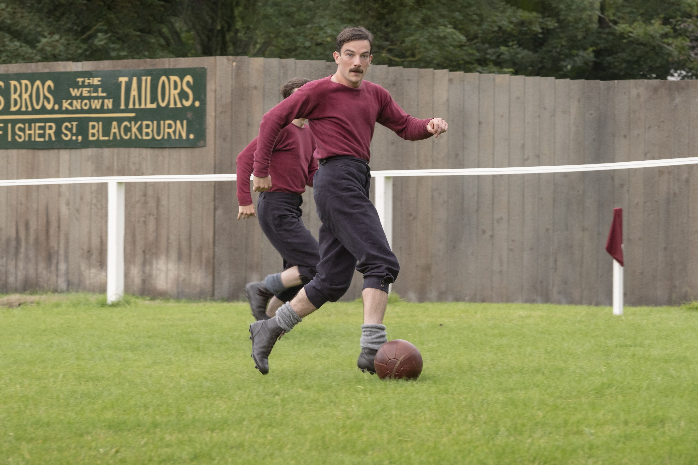
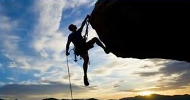
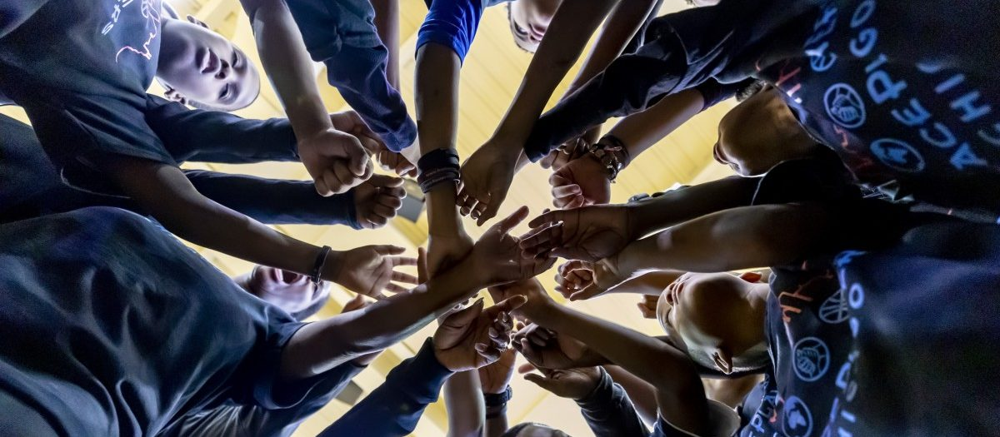

TARİHÇE
KM Sports, 2020 yılında Kutluhan Meydanlı ve arkadaşları tarafınfan kuruldu.
Geçmişinde çeşitli spor dallarıyla uğraşan Meydanlı, aslen amatör futbolcudur.2020 yılında ortaya çıkan COVID-19 pandemisiyle beraber futbola ara vermek zorunda kalan Meydanlı,evden para kazanmanın yollarını aradı.
İlk ürünü, diktiği kramponudur.Evinin yakınlarındaki futbol sahasında antrenman yaparken bu kramponu kullanmıştır ve rahatlığından memnun kaldığı için yakın arkadaşlarına tavsiye etmiştir ve önce onlara dikmiştir.
Ünü zaman içerisinde yayılan Meydanlı,daha sonralarında eşofman,tişört gibi ürünlerle yola çıkarak marketini gittikçe büyütmüştür ve KM Sports adını vermiştir.

MİSYONUMUZ
Misyonumuz dünyadaki her sporcuya ilham vermek ve yenilik sunmaktır.
"Bir bedenin varsa sen de bir sporcusun."

VİZYONUMUZ
Amacımız, sağlıklı bir gezegen, aktif topluluklar ve herkes için eşit bir oyun alanı yaratmak için dünyayı spor yoluyla birleştirmektir.
